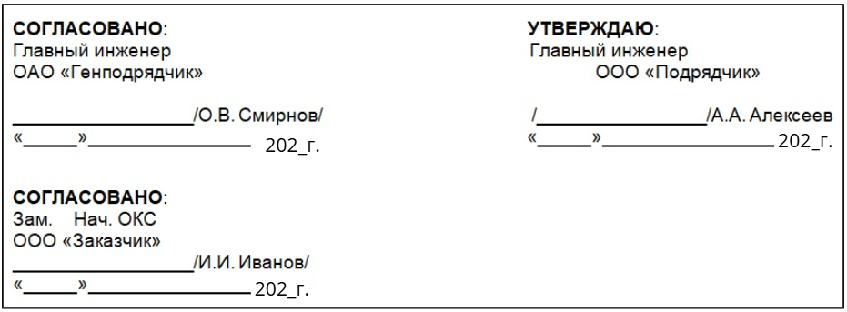
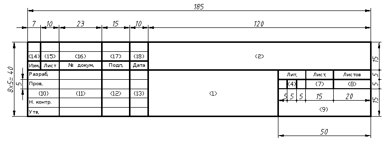
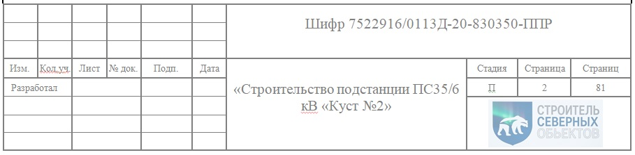
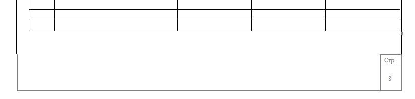
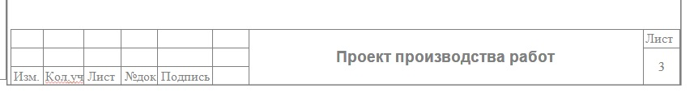

Как оформлять листы ППР

На этом уроке вы освоите правила оформления титульного листа, а также работу с графическими рамками и штампами, чтобы ваша документация успешно проходила проверку технадзора с первого раза.
Качественно оформленный ППР начинается с соблюдения ГОСТ 2.104-2006. Это база, которая делает документ профессиональным и упрощает его приемку технадзором.
Титульный лист всегда заключается в графическую рамку.
По стандарту отступы составляют:
- 20 мм слева — для подшивки в папку;
- 5 мм сверху, снизу и справа.
Что включить в содержание титульного листа
На титульном листе ППР укажите следующую информацию:
Реквизиты разработчика. Укажите юридический адрес компании подрядчика, телефон, электронный адрес, а также при наличии логотип компании.
Иерархия участников. Последовательно укажите заказчика, генподрядчика и подрядчика. Данные возьмите из карточки предприятия.
Требования к оформлению могут меняться в зависимости от специфики объекта. Обязательно уточните детали и согласуйте макет с заказчиком или службой технадзора.
Посмотрите на примере, как можно расположить участников строительства на титульном листе.

Название и реквизиты документа. Обязательный элемент документа — его название — «Проект производства работ», а также вид выполняемых работ и наименование объекта. Дополнительно можете указать шифр документа, который обычно формируется на основании проектной документации с добавлением индекса «П» или «ППР».
Нумерация и дополнительные элементы оформления. Начинайте нумерацию документов заранее, особенно если ожидается разработка множества ППР. Обязательно укажите год выпуска документа. Дополнительно можете включить сведения о расположении объекта строительства.
Как оформлять листы и работать со штампами
Для всех листов проекта сохраняются те же поля рамки, что и для титульного, но меняется формат основной надписи (штампа).
Первые листы документа
На титульном листе, листе согласования, составе ППР и оглавлении проставьте большой штамп по форме ГОСТ 2.104-2006. Это обязательное требование для вводной части технической документации.


Последующие листы
Не дублируйте большой штамп на всех листах после оглавления, чтобы рационально использовать пространство. Вместо этого у вас есть два варианта оформления:
- Нумерация страниц

- Малый штамп (ф. 2а): узкая рамка с основными данными. Это делает документ более эстетичным и удобным для чтения, хотя не является строго обязательным.


Упражнение. Расставьте элементы титульного листа в правильной иерархической последовательности.
Прекрасно! Вы уже на экваторе курса! В следующем уроке поговорим про придание ППР юридической силы через его согласование и утверждение.